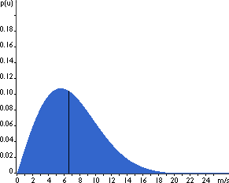

Describing
Wind Variations:
Weibull Distribution

The
General Pattern of Wind Speed Variations
It is very important for the wind industry to be able to describe
the variation of wind speeds. Turbine designers need the information
to optimise the design of their turbines, so as to minimise generating
costs. Turbine investors need the information to estimate their
income from electricity generation.

If you measure wind speeds throughout a year, you will notice
that in most areas strong gale force winds are rare, while moderate
and fresh winds are quite common.
 The wind variation for a typical site is
usually described using the so-called Weibull distribution,
as shown in the image. This particular site has a mean wind speed
of 7 metres per second, and the shape of the curve is determined
by a so called shape parameter of 2.
The wind variation for a typical site is
usually described using the so-called Weibull distribution,
as shown in the image. This particular site has a mean wind speed
of 7 metres per second, and the shape of the curve is determined
by a so called shape parameter of 2.
Statistical
Description of Wind Speeds
People who are familiar with statistics will realise that the
graph shows a probability density distribution. The area
under the curve is always exactly 1, since the probability that
the wind will be blowing at some wind speed including zero must
be 100 per cent.
 Half of the blue area is to the left of the
vertical black line at 6.6 metres per second. The 6.6 m/s is
called the median of the distribution. This means that
half the time it will be blowing less than 6.6 metres per second,
the other half it will be blowing faster than 6.6 metres per
second.
Half of the blue area is to the left of the
vertical black line at 6.6 metres per second. The 6.6 m/s is
called the median of the distribution. This means that
half the time it will be blowing less than 6.6 metres per second,
the other half it will be blowing faster than 6.6 metres per
second.
 You may wonder then, why we say that the
mean wind speed is 7 metres per second. The mean
wind speed is actually the average of the wind speed observations
we will get at this site.
You may wonder then, why we say that the
mean wind speed is 7 metres per second. The mean
wind speed is actually the average of the wind speed observations
we will get at this site.
 As you can see, the distribution of wind
speeds is skewed, i.e. it is not symmetrical. Sometimes
you will have very high wind speeds, but they are very rare.
Wind speeds of 5.5 metres per second, on the other hand, are
the most common ones. 5.5 metres is called the modal value
of the distribution. If we multiply each tiny wind speed interval
by the probability of getting that particular wind speed, and
add it all up, we get the mean wind speed.
As you can see, the distribution of wind
speeds is skewed, i.e. it is not symmetrical. Sometimes
you will have very high wind speeds, but they are very rare.
Wind speeds of 5.5 metres per second, on the other hand, are
the most common ones. 5.5 metres is called the modal value
of the distribution. If we multiply each tiny wind speed interval
by the probability of getting that particular wind speed, and
add it all up, we get the mean wind speed.
 The statistical distribution of wind speeds
varies from place to place around the globe, depending upon local
climate conditions, the landscape, and its surface. The Weibull
distribution may thus vary, both in its shape, and in its mean
value.
The statistical distribution of wind speeds
varies from place to place around the globe, depending upon local
climate conditions, the landscape, and its surface. The Weibull
distribution may thus vary, both in its shape, and in its mean
value.
 If the shape parameter is exactly 2, as in
the graph on this page, the distribution is known as a Rayleigh
distribution. Wind turbine manufacturers often give standard
performance figures for their machines using the Rayleigh distribution.
If the shape parameter is exactly 2, as in
the graph on this page, the distribution is known as a Rayleigh
distribution. Wind turbine manufacturers often give standard
performance figures for their machines using the Rayleigh distribution.
Balancing
the Weibull Distribution
Another way
of finding the mean wind speed is to balance the pile
of blue bricks to the right, which shows exactly the same as
the graph above. Each brick represents the probability that the
wind will be blowing at that speed during 1 per cent of the time
during the year. 1 m/s wind speeds are in the pile to the far
left, 17 m/s is to the far right.
 The point at which the whole pile will balance
exactly will be at the 7th pile, i.e. the mean wind speed is
7 m/s.
The point at which the whole pile will balance
exactly will be at the 7th pile, i.e. the mean wind speed is
7 m/s.
Try
This!
If you have a Netscape 3,
4 or Internet Explorer
4 browser, the next page will let you experiment with different
values for the Weibull parameters to get a grasp of what the
wind speed probability distribution looks like.
© Copyright 1999 Soren Krohn. All rights reserved.
Updated 6 August 2000
http://www.windpower.org/tour/wres/Weibull.htm